[Toàn Chương] LM08 — Learning Module 8 Exchange Rate Calculations
Volume 2: Economics
Learning Module 8 Exchange Rate Calculations
Part 1/1: Exchange Rate Calculations (PDF Pages 261–276)
Tập 2: Kinh tế học (Volume 2: Economics)
Học phần 8: Tính toán Tỷ giá hối đoái (Learning Module 8: Exchange Rate Calculations)
Phần 1/1: Tính toán Tỷ giá hối đoái (Exchange Rate Calculations) (Trang PDF 261–276)
L E A R N I N G M O D U L E
H Ọ C P H Ầ N (L E A R N I N G M O D U L E)
8
8
Exchange Rate Calculations
Tính toán Tỷ giá hối đoái (Exchange Rate Calculations)
LEARNING OUTCOMES
MỤC TIÊU HỌC TẬP (LEARNING OUTCOMES)
Mastery The candidate should be able to: calculate and interpret currency cross-rates explain the arbitrage relationship between spot and forward exchange rates and interest rates, calculate a forward rate using points or in percentage terms, and interpret a forward discount or premium
Thành thạo – Ứng viên cần có khả năng: - Tính toán và diễn giải tỷ giá chéo tiền tệ (currency cross-rates). - Giải thích mối quan hệ kinh doanh chênh lệch giá (arbitrage relationship) giữa tỷ giá hối đoái giao ngay, tỷ giá hối đoái kỳ hạn và lãi suất; tính toán tỷ giá kỳ hạn (forward rate) bằng cách sử dụng điểm kỳ hạn (points) hoặc theo tỷ lệ phần trăm; và diễn giải mức chiết khấu kỳ hạn (forward discount) hoặc phần bù kỳ hạn (forward premium).
INTRODUCTION
GIỚI THIỆU (INTRODUCTION)
1
1
The foreign exchange market facilitates international currency and trade flows, and it is important to understand how currency exchange rates are calculated. Market participants can also derive cross-rates to expand trading opportunities by determining quotes for currencies not directly traded. Understanding the concept of arbitrage relationships in the foreign exchange market provides a basis for understanding the interrelationships between four key market inputs. Global entities trade currencies for a wide variety of purposes and understanding the relationships between the market factors affecting spot and forward rates is crucial. These interactions are reinforced by the calculations in the second lesson.
Thị trường ngoại hối tạo điều kiện thuận lợi cho các dòng chảy tiền tệ và thương mại quốc tế, và điều quan trọng là phải hiểu cách thức tính toán tỷ giá hối đoái tiền tệ. Các chủ thể tham gia thị trường cũng có thể suy ra các tỷ giá chéo (cross-rates) để mở rộng cơ hội giao dịch bằng cách xác định báo giá cho các đồng tiền không được giao dịch trực tiếp với nhau. Việc hiểu rõ khái niệm về các mối quan hệ kinh doanh chênh lệch giá (arbitrage relationships) trên thị trường ngoại hối cung cấp một nền tảng để hiểu được mối quan hệ tương hỗ giữa bốn yếu tố đầu vào chính của thị trường. Các tổ chức toàn cầu giao dịch tiền tệ vì nhiều mục đích khác nhau và việc hiểu rõ mối quan hệ giữa các yếu tố thị trường ảnh hưởng đến tỷ giá giao ngay (spot rates) và tỷ giá kỳ hạn (forward rates) là vô cùng quan trọng. Những sự tương tác này được củng cố thông qua các phép tính trong bài học thứ hai.
LEARNING MODULE OVERVIEW
TỔNG QUAN HỌC PHẦN (LEARNING MODULE OVERVIEW)
-
An exchange rate between two currencies that are not expressly quoted on the market is known as a cross-rate and can be calculated using conventional currency quotes.
-
Three conventional currency market quotes can be used with one inversion to calculate a cross-rate.
-
Discrepancies in exchange rates can create arbitrage opportunities but they are rare due to market efficiencies.
-
The premium of a forward exchange rate over a spot rate is quoted in terms of forward points, which are also called swap points.
-
Một tỷ giá hối đoái giữa hai đồng tiền không được yết giá trực tiếp trên thị trường được gọi là tỷ giá chéo (cross-rate) và có thể được tính toán bằng cách sử dụng các yết giá tiền tệ thông thường.
-
Ba yết giá thị trường tiền tệ thông thường có thể được sử dụng cùng với một phép nghịch đảo (inversion) để tính toán một tỷ giá chéo.
-
Sự chênh lệch bất hợp lý trong tỷ giá hối đoái có thể tạo ra các cơ hội kinh doanh chênh lệch giá (arbitrage opportunities) nhưng chúng rất hiếm khi xảy ra do tính hiệu quả của thị trường.
-
Phần bù (premium) của tỷ giá hối đoái kỳ hạn so với tỷ giá giao ngay được yết theo điểm kỳ hạn (forward points), còn được gọi là điểm hoán đổi (swap points).
-
Forward rates are directly proportional to currency spot rates, the interest rate differential, and the maturity of the forward contract.
-
As a result of the interrelationship among these four variables, any variable can be calculated by using the other three as inputs.
-
Tỷ giá kỳ hạn tỷ lệ thuận với tỷ giá giao ngay của tiền tệ, mức chênh lệch lãi suất (interest rate differential), và kỳ hạn (maturity) của hợp đồng kỳ hạn.
-
Do mối quan hệ tương hỗ giữa bốn biến số này, bất kỳ biến số nào cũng có thể được tính toán bằng cách sử dụng ba biến số còn lại làm dữ liệu đầu vào.
2
2
CROSS-RATE CALCULATIONS
TÍNH TOÁN TỶ GIÁ CHÉO (CROSS-RATE CALCULATIONS)
calculate and interpret currency cross-rates
Tính toán và diễn giải tỷ giá chéo tiền tệ.
Global currencies are bought, sold, and exchanged in the foreign exchange (FX) market. In this decentralized market, participants trade currencies utilizing exchange rates, which typically reflect an efficient market. This section will cover the use of cross exchange rate relationships (cross-rates) to calculate exchange rates between two currencies using a third currency. It also will introduce calculations used in the FX market to trade currencies.
Các đồng tiền toàn cầu được mua, bán và trao đổi trên thị trường ngoại hối (FX). Trong thị trường phi tập trung (decentralized market) này, các chủ thể tham gia giao dịch tiền tệ bằng cách sử dụng các tỷ giá hối đoái vốn thường phản ánh một thị trường hiệu quả. Phần này sẽ trình bày việc sử dụng các mối quan hệ tỷ giá hối đoái chéo (cross-rates) để tính toán tỷ giá hối đoái giữa hai đồng tiền thông qua một đồng tiền thứ ba. Phần này cũng sẽ giới thiệu các phép tính được sử dụng trên thị trường FX để giao dịch tiền tệ.
Given two exchange rates involving three currencies, it is possible to back out the cross-rate. For example, as we have seen in a prior lesson, the FX market convention is to quote the exchange rate between the US dollar and the euro as euro–dollar (USD/EUR). The FX market also quotes the exchange rate between the Canadian dollar and US dollar as dollar–Canada (CAD/USD). Given these two exchange rates, it is possible to back out the cross-rate between the euro and the Canadian dollar, which according to market convention is quoted as euro–Canada (CAD/EUR). This calculation is shown as follows:
Khi biết hai tỷ giá hối đoái liên quan đến ba đồng tiền, chúng ta có thể suy ngược ra tỷ giá chéo (cross-rate). Ví dụ, như chúng ta đã thấy trong bài học trước, quy ước của thị trường FX là yết tỷ giá hối đoái giữa đồng đô la Mỹ và đồng euro dưới dạng euro–dollar (USD/EUR). Thị trường FX cũng yết tỷ giá hối đoái giữa đồng đô la Canada và đồng đô la Mỹ dưới dạng dollar–Canada (CAD/USD). Khi biết hai tỷ giá hối đoái này, có thể suy ra tỷ giá chéo giữa đồng euro và đồng đô la Canada, mà theo quy ước thị trường được yết dưới dạng euro–Canada (CAD/EUR). Phép tính này được trình bày như sau:
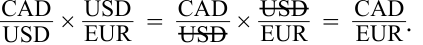
Hence, to get a euro–Canada (CAD/EUR) quote, we must multiply the dollar–Canada (CAD/USD) quote by the euro–dollar (USD/EUR) quote. For example, assume the exchange rate for dollar–Canada is 1.3020 and the exchange rate for euro–dollar is 1.1701. Using these spot exchange rates, the euro–Canada cross-rate equals:
Do đó, để có được báo giá euro–Canada (CAD/EUR), chúng ta phải nhân báo giá dollar–Canada (CAD/USD) với báo giá euro–dollar (USD/EUR). Ví dụ, giả sử tỷ giá hối đoái của cặp dollar–Canada là 1,3020 và tỷ giá hối đoái của cặp euro–dollar là 1,1701. Sử dụng các tỷ giá hối đoái giao ngay này, tỷ giá chéo euro–Canada bằng:
1.3020 × 1.1701 = 1.5235 CAD per EUR.
The professional FX market does not use the convention of direct or indirect quotes because these conventions depend on one’s location to determine the domestic versus foreign currencies. Instead, the market uses rate quotes on defined conventional currency pairs. Sometimes, to get a cross-rate using several currency quotes, it is necessary to invert a quote to get an intermediary currency that can be canceled out in the equation to obtain the cross-rate. For example, to get a Canada–yen (JPY/CAD) quote, one typically uses the dollar–Canada (CAD/USD) rate and dollar–yen (JPY/ USD) rate, which are the market conventions. This Canada–yen calculation requires that the dollar–Canada rate (CAD/USD) be inverted to a Canada–dollar (USD/CAD) quote for the calculations to work, as follows:
Thị trường FX chuyên nghiệp không sử dụng quy ước yết giá trực tiếp hay gián tiếp bởi vì các quy ước này phụ thuộc vào vị trí địa lý của một người để xác định đồng nội tệ so với đồng ngoại tệ. Thay vào đó, thị trường sử dụng các báo giá tỷ giá trên các cặp tiền tệ thông thường đã được định nghĩa sẵn. Đôi khi, để có được một tỷ giá chéo bằng cách sử dụng một số báo giá tiền tệ, cần phải nghịch đảo (invert) một báo giá để có được một đồng tiền trung gian có thể triệt tiêu lẫn nhau trong phương trình nhằm thu được tỷ giá chéo. Ví dụ, để có được báo giá Canada–yen (JPY/CAD), người ta thường sử dụng tỷ giá dollar–Canada (CAD/USD) và tỷ giá dollar–yen (JPY/USD), vốn là các quy ước thị trường. Phép tính Canada–yen này đòi hỏi tỷ giá dollar–Canada (CAD/USD) phải được nghịch đảo thành báo giá Canada–dollar (USD/CAD) để phép tính có thể thực hiện được, như sau:
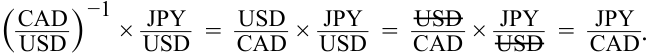
Hence, to get a Canada–yen (JPY/CAD) quote, we must first invert the dollar–Canada (CAD/USD) quote before multiplying by the dollar–yen (JPY/USD) quote. Market quotes for most currencies are quoted to four decimal places; however, the Japanese yen exchange rate is quoted to two decimal places. For example, assume that we have
Do đó, để có được báo giá Canada–yen (JPY/CAD), trước tiên chúng ta phải nghịch đảo báo giá dollar–Canada (CAD/USD) trước khi nhân với báo giá dollar–yen (JPY/USD). Báo giá thị trường đối với hầu hết các đồng tiền được yết đến bốn chữ số thập phân; tuy nhiên, tỷ giá hối đoái đồng yên Nhật được yết đến hai chữ số thập phân. Ví dụ, giả sử rằng chúng ta có
spot exchange rates of 1.3020 for dollar–Canada (CAD/USD) and 111.94 for dollar–yen (JPY/USD). The dollar–Canada rate of 1.3020 inverts to 0.7680; multiplying this value by the dollar–yen quote of 111.94 gives the following Canada–yen quote:
tỷ giá hối đoái giao ngay là 1,3020 đối với cặp dollar–Canada (CAD/USD) và 111,94 đối với cặp dollar–yen (JPY/USD). Tỷ giá dollar–Canada 1,3020 khi nghịch đảo sẽ bằng 0,7680; nhân giá trị này với báo giá dollar–yen 111,94 sẽ cho ra báo giá Canada–yen như sau:
0.7680 × 111.94 = 85.97 JPY per CAD.
Market participants asking for a quote in a cross-rate currency pair typically will not need to do this calculation themselves: Either the dealer or the electronic trading platform will provide a quote in the specified currency pair. (For example, a client asking for a quote in Canada–yen will receive that quote from the dealer; he will not be given separate dollar–Canada and dollar–yen quotes to do the calculation.) Dealers providing the quotes often have to do this calculation themselves if only because the dollar–Canada and dollar–yen currency pairs often trade on different trading desks and involve different traders. Electronic dealing machines used in both the interbank market and bank-to-client markets often provide this mathematical operation to calculate cross-rates automatically.
Các chủ thể tham gia thị trường khi yêu cầu báo giá cho một cặp tiền tệ tỷ giá chéo thường sẽ không cần phải tự mình thực hiện phép tính này: Nhà giao dịch (dealer) hoặc nền tảng giao dịch điện tử sẽ cung cấp báo giá trực tiếp cho cặp tiền tệ được chỉ định đó. (Ví dụ, một khách hàng yêu cầu báo giá cặp Canada–yen sẽ nhận được báo giá đó từ nhà giao dịch; khách hàng sẽ không được cung cấp các báo giá dollar–Canada và dollar–yen riêng rẽ để tự làm phép tính.) Các nhà giao dịch cung cấp báo giá thường phải tự mình thực hiện phép tính này chỉ vì các cặp tiền tệ dollar–Canada và dollar–yen thường được giao dịch tại các bàn giao dịch (trading desks) khác nhau và liên quan đến các nhà giao dịch khác nhau. Các máy giao dịch điện tử được sử dụng trên cả thị trường liên ngân hàng và thị trường ngân hàng – khách hàng thường cung cấp sẵn phép toán này để tự động tính toán các tỷ giá chéo.
Because market participants can receive both a cross-rate quote (e.g., Canada–yen) as well as the component underlying exchange rate quotes (e.g., dollar–Canada and dollar–yen), these cross-rate quotes must be consistent with the previous equation; otherwise, the market will arbitrage the mispricing. Extending our example, we calculate a Canada–yen (JPY/CAD) rate of 85.97 based on underlying dollar–Canada (CAD/USD) and dollar–yen (JPY/USD) rates of 1.3020 and 111.94, respectively. Now suppose that at the same time a misguided dealer quotes a Canada–yen rate of 86.20. This is a different price in Canada–yen for an identical service—that is, converting yen into Canadian dollars. Hence, any trader could buy CAD1 at the lower price of JPY85.97and then turn around and sell CAD1 at JPY86.20 (recall our earlier discussion of how price and base currencies are defined). The riskless arbitrage profit is JPY0.23 per CAD1. The arbitrage—called triangular arbitrage (we use “tri-” because it involves three currencies—would continue until the price discrepancy was removed.
Bởi vì các chủ thể tham gia thị trường có thể nhận được cả báo giá tỷ giá chéo (ví dụ: Canada–yen) cũng như các báo giá tỷ giá hối đoái cơ sở cấu thành nên nó (ví dụ: dollar–Canada và dollar–yen), các báo giá tỷ giá chéo này phải nhất quán với phương trình nêu trên; nếu không, thị trường sẽ thực hiện kinh doanh chênh lệch giá (arbitrage) đối với việc định giá sai đó. Mở rộng ví dụ của chúng ta, chúng ta tính được tỷ giá Canada–yen (JPY/CAD) là 85,97 dựa trên các tỷ giá cơ sở dollar–Canada (CAD/USD) và dollar–yen (JPY/USD) lần lượt là 1,3020 và 111,94. Bây giờ giả sử rằng cùng lúc đó, một nhà giao dịch thiếu nắm bắt thông tin lại yết tỷ giá Canada–yen ở mức 86,20. Đây là một mức giá khác của cặp Canada–yen cho một dịch vụ giống hệt nhau—tức là chuyển đổi đồng yên sang đồng đô la Canada. Do đó, bất kỳ nhà giao dịch nào cũng có thể mua 1 CAD ở mức giá thấp hơn là 85,97 JPY và sau đó quay sang bán 1 CAD ở mức giá 86,20 JPY (hãy nhớ lại cuộc thảo luận trước đây của chúng ta về cách định nghĩa đồng tiền định giá và đồng tiền cơ sở). Khoản lợi nhuận kinh doanh chênh lệch giá phi rủi ro (riskless arbitrage profit) là 0,23 JPY trên mỗi 1 CAD. Hoạt động kinh doanh chênh lệch giá này—được gọi là kinh doanh chênh lệch giá ba bên (triangular arbitrage, chúng ta dùng từ “ba bên” vì nó liên quan đến ba đồng tiền)—sẽ tiếp diễn cho đến khi sự chênh lệch giá bị loại bỏ hoàn toàn.
In reality, however, these discrepancies in cross-rates rarely occur because both human traders and automatic trading algorithms are constantly on alert for any pricing inefficiencies. In practice, and for the purposes of this lesson, we can consider cross-rates as being consistent with their underlying exchange rate quotes and can assume that given any two exchange rates involving three currencies, we can back out the third cross-rate.
Tuy nhiên, trên thực tế, những sự chênh lệch bất hợp lý trong tỷ giá chéo này hiếm khi xảy ra bởi vì cả các nhà giao dịch là con người lẫn các thuật toán giao dịch tự động đều luôn trong trạng thái cảnh giác cao độ trước bất kỳ sự thiếu hiệu quả nào trong việc định giá. Trên thực tế, và phục vụ cho mục đích của bài học này, chúng ta có thể coi các tỷ giá chéo là hoàn toàn nhất quán với các báo giá tỷ giá hối đoái cơ sở của chúng và có thể giả định rằng khi biết hai tỷ giá hối đoái bất kỳ liên quan đến ba đồng tiền, chúng ta có thể suy ra được tỷ giá chéo thứ ba.
EXAMPLE 1
VÍ DỤ 1 (EXAMPLE 1)
Cross-Rates and Percentage Changes
Tỷ giá chéo và Phần trăm thay đổi (Cross-Rates and Percentage Changes)
A research report produced by a dealer includes the following spot rate quotes:
Một báo cáo nghiên cứu do một nhà giao dịch (dealer) thực hiện bao gồm các báo giá tỷ giá giao ngay sau đây:
| Currency | Spot Rate | Expected Spot Rate in One Year |
|---|---|---|
| USD/EUR | 1.1701 | 1.1619 |
| CHF/USD | 0.9900 | 0.9866 |
| USD/GBP | 1.3118 | 1.3066 |
| Cặp tiền tệ (Currency) | Tỷ giá giao ngay (Spot Rate) | Tỷ giá giao ngay kỳ vọng sau một năm (Expected Spot Rate in One Year) |
|---|---|---|
| USD/EUR | 1,1701 | 1,1619 |
| CHF/USD | 0,9900 | 0,9866 |
| USD/GBP | 1,3118 | 1,3066 |
- The spot CHF/EUR cross-rate is closest to: A. 0.8461.
1. Tỷ giá chéo giao ngay CHF/EUR gần nhất với mức:
B. 0.8546.
-
A. 0,8461.
-
B. 0,8546.
C. 1.1584. Solution : C is correct: _ _ _ EURCHF= USD EUR× USDCHF= 1.1701 × 0.9900 = 1.1584 2. The spot GBP/EUR cross-rate is closest to: A. 0.8920. B. 1.1211. C. 1.4653. Solution : A is correct: −1 _ _ _ _ _ _ EURGBP= USD EUR× (USD GBP) =USD EUR× USDGBP= 1.1701 1.3118= 0.8920
- C. 1,1584.
Lời giải (Solution):
- Based on the research report, the euro is expected to appreciate by how much against the US dollar over the next year? A. –0.7 percent B. +0.7 percent C. +1.0 percent Solution :
C là đáp án đúng:
2. Tỷ giá chéo giao ngay GBP/EUR gần nhất với mức:
A is correct. The euro is the base currency in the USD/EUR quote, and the expected decrease in the USD/EUR rate indicates that the euro is depreciating. In one year, it will cost less, in US dollars, to buy one euro. Mathematically: _1.1619 1.1701− 1 = − 0.7%
- A. 0,8920.
- B. 1,1211.
- C. 1,4653.
Lời giải (Solution):
- Based on the research report, how much is the US dollar expected to appreciate against the British pound sterling over the next year?
A là đáp án đúng:
3. Dựa trên báo cáo nghiên cứu, đồng euro được kỳ vọng sẽ lên giá bao nhiêu phần trăm so với đồng đô la Mỹ trong năm tới?
A. +0.6 percent B. –0.4 percent C. +0.4 percent Solution :
- A. –0,7%
- B. +0,7%
- C. +1,0%
C is correct. The British pound is the base currency in the USD/GBP quote, and the expected decrease in the USD/GBP rate means that the British pound is expected to depreciate against the US dollar. Or equivalently, the US dollar is expected to appreciate against the British pound. Mathematically: −1 _ _ − 1 =1.3118 (1.3066 1.3118) 1.3066− 1 = + 0.4%
Lời giải (Solution):
A là đáp án đúng. Đồng euro là đồng tiền cơ sở trong báo giá USD/EUR, và sự sụt giảm kỳ vọng trong tỷ giá USD/EUR cho thấy đồng euro đang mất giá. Sau một năm nữa, sẽ tốn ít đô la Mỹ hơn để mua một euro. Về mặt toán học:
- Over the next year, the Swiss franc is expected to:
4. Dựa trên báo cáo nghiên cứu, đồng đô la Mỹ được kỳ vọng sẽ lên giá bao nhiêu phần trăm so với đồng bảng Anh trong năm tới?
- A. +0,6%
- B. –0,4%
- C. +0,4%
A. depreciate against the British pound.
Lời giải (Solution):
C là đáp án đúng. Đồng bảng Anh là đồng tiền cơ sở trong báo giá USD/GBP, và sự sụt giảm kỳ vọng trong tỷ giá USD/GBP có nghĩa là đồng bảng Anh được kỳ vọng sẽ mất giá so với đồng đô la Mỹ. Hoặc tương đương, đồng đô la Mỹ được kỳ vọng sẽ lên giá so với đồng bảng Anh. Về mặt toán học:
B. depreciate against the euro.
5. Trong năm tới, đồng franc Thụy Sĩ được kỳ vọng sẽ:
-
A. mất giá so với đồng bảng Anh.
-
B. mất giá so với đồng euro.
C. appreciate against the British pound, euro, and US dollar. Solution :
- C. lên giá so với đồng bảng Anh, đồng euro và đồng đô la Mỹ.
Lời giải (Solution):
C is correct: Because the question does not require calculating the magnitude of the appreciation or depreciation, we can use the Swiss franc as either the price currency or the base currency. In this case, it is easier to use the Swiss franc as the price currency. CHF/USD is expected to decline from 0.9900 to 0.9866, so the Swiss franc is expected to be stronger (i.e., it should appreciate against the US dollar). CHF/EUR is currently 1.1584 (see the solution to problem 1) and is expected to be 1.1463 (= 0.9866 × 1.1619), so the Swiss franc is expected to appreciate against the euro. CHF/GBP is currently 1.2987 (= 0.9900 × 1.3118) and is expected to be 1.2891 (= 0.9866 × 1.3066), so the Swiss franc is also expected to appreciate against the British pound.
C là đáp án đúng: Bởi vì câu hỏi không yêu cầu tính toán độ lớn của mức lên giá hay mất giá, chúng ta có thể sử dụng đồng franc Thụy Sĩ làm đồng tiền định giá hoặc đồng tiền cơ sở. Trong trường hợp này, việc sử dụng đồng franc Thụy Sĩ làm đồng tiền định giá sẽ dễ dàng hơn. Tỷ giá CHF/USD được kỳ vọng sẽ giảm từ 0,9900 xuống 0,9866, vì vậy đồng franc Thụy Sĩ được kỳ vọng sẽ mạnh hơn (tức là nó sẽ lên giá so với đồng đô la Mỹ). Tỷ giá CHF/EUR hiện tại là 1,1584 (xem lời giải câu 1) và được kỳ vọng sẽ ở mức 1,1463 ($= 0,9866 \times 1,1619$), vì vậy đồng franc Thụy Sĩ được kỳ vọng sẽ lên giá so với đồng euro. Tỷ giá CHF/GBP hiện tại là 1,2987 ($= 0,9900 \times 1,3118$) và được kỳ vọng sẽ ở mức 1,2891 ($= 0,9866 \times 1,3066$), vì vậy đồng franc Thụy Sĩ cũng được kỳ vọng sẽ lên giá so với đồng bảng Anh.
Alternatively, we can derive this answer intuitively. According to the research report, the CHF/USD rate is expected to decline: That is, the US dollar is expected to depreciate against the Swiss franc, or alternatively, the Swiss franc is expected to appreciate against the US dollar. The USD/EUR and USD/GBP rates are also decreasing, meaning that the euro and British pound are expected to depreciate against the US dollar, or alternatively, the US dollar is expected to appreciate against the euro and British pound. If the Swiss franc is expected to appreciate against the US dollar and the US dollar is expected to appreciate against both the euro and British pound, it follows that the Swiss franc is expected to appreciate against both the euro and British pound.
Ngoài ra, chúng ta có thể suy ra câu trả lời này bằng trực giác. Theo báo cáo nghiên cứu, tỷ giá CHF/USD được kỳ vọng sẽ giảm: Nghĩa là đồng đô la Mỹ được kỳ vọng sẽ mất giá so với đồng franc Thụy Sĩ, hoặc nói cách khác, đồng franc Thụy Sĩ được kỳ vọng sẽ lên giá so với đồng đô la Mỹ. Tỷ giá USD/EUR và USD/GBP cũng đang giảm xuống, nghĩa là đồng euro và đồng bảng Anh được kỳ vọng sẽ mất giá so với đồng đô la Mỹ, hoặc nói cách khác, đồng đô la Mỹ được kỳ vọng sẽ lên giá so với đồng euro và đồng bảng Anh. Nếu đồng franc Thụy Sĩ được kỳ vọng sẽ lên giá so với đồng đô la Mỹ và đồng đô la Mỹ được kỳ vọng sẽ lên giá so với cả đồng euro và đồng bảng Anh, thì suy ra rằng đồng franc Thụy Sĩ được kỳ vọng sẽ lên giá so với cả đồng euro và đồng bảng Anh.
- Based on the research report, which of the following lists the three currencies from strongest to weakest over the next year?
-
A. US dollar, British pound, euro
-
B. US dollar, euro, British pound
-
C. Euro, US dollar, British pound
-
Solution :
6. Dựa trên báo cáo nghiên cứu, phương án nào sau đây liệt kê ba đồng tiền theo thứ tự từ mạnh nhất đến yếu nhất trong năm tới?
-
A. Đô la Mỹ, bảng Anh, euro
-
B. Đô la Mỹ, euro, bảng Anh
-
C. Euro, đô la Mỹ, bảng Anh
A is correct. USD/EUR is expected to decline from 1.1701 to 1.1619, while USD/GBP is expected to decline from 1.3118 to 1.3066. So, the US dollar is expected to be stronger than both the euro and British pound. GBP/EUR is currently 0.8920 [= (1.3118)–1 × 1.1701] and is expected to be 0.8893 [= (1.3066)–1 × 1.1619], so the British pound is expected to be stronger than the euro.
Lời giải (Solution):
A là đáp án đúng. Tỷ giá USD/EUR được kỳ vọng sẽ giảm từ 1,1701 xuống 1,1619, trong khi tỷ giá USD/GBP được kỳ vọng sẽ giảm từ 1,3118 xuống 1,3066. Vì vậy, đồng đô la Mỹ được kỳ vọng sẽ mạnh hơn cả đồng euro và đồng bảng Anh. Tỷ giá GBP/EUR hiện tại là 0,8920 [$= (1,3118)^{-1} \times 1,1701$] và được kỳ vọng sẽ ở mức 0,8893 [$= (1,3066)^{-1} \times 1,1619$], vì vậy đồng bảng Anh được kỳ vọng sẽ mạnh hơn đồng euro.
- Based on the research report, which of the following lists the three currencies in order of appreciating the most to appreciating the least (in percentage terms) against the US dollar over the next year?
-
A. British pound, Swiss franc, euro
-
B. Swiss franc, British pound, euro
7. Dựa trên báo cáo nghiên cứu, phương án nào sau đây liệt kê ba đồng tiền theo thứ tự từ lên giá nhiều nhất đến lên giá ít nhất (tính theo tỷ lệ phần trăm) so với đồng đô la Mỹ trong năm tới?
C. Euro, Swiss franc, British pound Solution :
-
A. Bảng Anh, franc Thụy Sĩ, euro
-
B. Franc Thụy Sĩ, bảng Anh, euro
-
C. Euro, franc Thụy Sĩ, bảng Anh
B is correct. The USD/EUR rate depreciates by –0.7 percent (= [1.1619/1.1701] – 1), which is the depreciation of the base currency euro against the US dollar. The USD/GBP rate declines –0.4 percent (= [1.3066/1.3118] – 1), which is the depreciation of the British pound against the US dollar. Inverting the CHF/USD rate to a USD/CHF convention shows
Lời giải (Solution):
B là đáp án đúng. Tỷ giá USD/EUR mất giá –0,7% ($= [1,1619 / 1,1701] - 1$), đây là mức mất giá của đồng tiền cơ sở euro so với đồng đô la Mỹ. Tỷ giá USD/GBP giảm –0,4% ($= [1,3066 / 1,3118] - 1$), đây là mức mất giá của đồng bảng Anh so với đồng đô la Mỹ. Nghịch đảo tỷ giá CHF/USD sang quy ước USD/CHF cho thấy
that the base currency Swiss franc appreciates by +0.35 percent against the US dollar (= [1.0136/1.0101] – 1).
đồng tiền cơ sở franc Thụy Sĩ lên giá +0,35% so với đồng đô la Mỹ ($= [1,0136 / 1,0101] - 1$).
3
3
FORWARD RATE CALCULATIONS
TÍNH TOÁN TỶ GIÁ KỲ HẠN (FORWARD RATE CALCULATIONS)
explain the arbitrage relationship between spot and forward exchange rates and interest rates, calculate a forward rate using points or in percentage terms, and interpret a forward discount or premium
Giải thích mối quan hệ kinh doanh chênh lệch giá giữa tỷ giá hối đoái giao ngay, tỷ giá hối đoái kỳ hạn và lãi suất; tính toán tỷ giá kỳ hạn bằng cách sử dụng điểm kỳ hạn hoặc theo tỷ lệ phần trăm; và diễn giải mức chiết khấu kỳ hạn hoặc phần bù kỳ hạn.
This lesson continues the previous discussion of the FX market by considering the interactions between spot and forward rates, interest rates, and maturities, which exist because of arbitrage relationships. The relationships among these four factors are maintained because of market efficiencies, and any one factor can be determined using the other three as inputs. In addition, this lesson covers the methods of calculating forward rates in point and percentage terms as well as forward discounts and premiums for these rate relationships.
Bài học này tiếp nối cuộc thảo luận trước đó về thị trường FX bằng cách xem xét sự tương tác giữa tỷ giá giao ngay, tỷ giá kỳ hạn, lãi suất và kỳ hạn thanh toán (maturities), vốn tồn tại do các mối quan hệ kinh doanh chênh lệch giá (arbitrage relationships). Mối quan hệ giữa bốn yếu tố này được duy trì nhờ tính hiệu quả của thị trường, và bất kỳ một yếu tố nào cũng có thể được xác định bằng cách sử dụng ba yếu tố còn lại làm dữ liệu đầu vào. Ngoài ra, bài học này còn trình bày các phương pháp tính toán tỷ giá kỳ hạn theo điểm (point terms) và theo tỷ lệ phần trăm (percentage terms) cũng như các mức chiết khấu kỳ hạn (forward discounts) và phần bù kỳ hạn (forward premiums) cho các mối quan hệ tỷ giá này.
In professional FX markets, forward exchange rates typically are quoted in terms of points (also sometimes referred to as “pips”). The points on a forward rate quote are simply the difference between the forward exchange rate quote and the spot exchange rate quote, with the points scaled so that they can be related to the last decimal in the spot quote. When the forward rate is higher than the spot rate, the points are positive and the base currency is said to be trading at a forward premium . Conversely, if the forward rate is less than the spot rate, the points (forward rate minus spot rate) are negative and the base currency is said to be trading at a forward discount . Of course, if the base currency is trading at a forward premium, then the price currency is trading at a forward discount, and vice versa.
Trên các thị trường FX chuyên nghiệp, tỷ giá hối đoái kỳ hạn thường được yết theo điểm (points, đôi khi còn được gọi là “pips”). Điểm kỳ hạn trên một báo giá tỷ giá kỳ hạn đơn giản là phần chênh lệch giữa báo giá tỷ giá hối đoái kỳ hạn và báo giá tỷ giá hối đoái giao ngay, với số điểm được quy đổi tỷ lệ (scaled) sao cho chúng có thể liên hệ với chữ số thập phân cuối cùng trong báo giá giao ngay. Khi tỷ giá kỳ hạn cao hơn tỷ giá giao ngay, số điểm mang giá trị dương và đồng tiền cơ sở được gọi là đang giao dịch ở mức phần bù kỳ hạn (forward premium). Ngược lại, nếu tỷ giá kỳ hạn thấp hơn tỷ giá giao ngay, số điểm (tỷ giá kỳ hạn trừ đi tỷ giá giao ngay) mang giá trị âm và đồng tiền cơ sở được gọi là đang giao dịch ở mức chiết khấu kỳ hạn (forward discount). Tất nhiên, nếu đồng tiền cơ sở đang giao dịch ở mức phần bù kỳ hạn, thì đồng tiền định giá đang giao dịch ở mức chiết khấu kỳ hạn, và ngược lại.
This can best be explained by means of an example. Assume the spot euro–dollar exchange rate (USD/EUR) is 1.15885 and the one-year forward rate is 1.19532. Hence, the forward rate is trading at a premium to the spot rate (the forward rate is larger than the spot rate) and the one-year forward points are quoted as +364.7. This +364.7 comes from the following calculation:
Điều này có thể được giải thích rõ nhất thông qua một ví dụ. Giả sử tỷ giá hối đoái giao ngay euro–dollar (USD/EUR) là 1,15885 và tỷ giá kỳ hạn một năm là 1,19532. Do đó, tỷ giá kỳ hạn đang giao dịch ở mức phần bù (premium) so với tỷ giá giao ngay (tỷ giá kỳ hạn lớn hơn tỷ giá giao ngay) và điểm kỳ hạn một năm được yết là +364,7. Con số +364,7 này xuất phát từ phép tính sau:
1.19532 – 1.15885 = +0.03647.
Recall that most non-yen exchange rates are quoted to four decimal places. In this case, we would scale up by four decimal places (multiply by 10,000) so that this +0.03647 would be represented as +364.7 points. Notice that the points are scaled to the size of the last digit in the spot exchange rate quote—usually the fourth decimal place. Notice as well that points typically are quoted to one (or more) decimal places, meaning that the forward rate will typically be quoted to five or more decimal places. The exception among the major currencies is the yen, which is typically quoted to two decimal places for spot rates. Here, forward points are scaled up by two decimal places—the last digit in the spot rate quote—by multiplying the difference between forward and spot rates by 100.
Hãy nhớ lại rằng hầu hết các tỷ giá hối đoái không phải đồng yên đều được yết đến bốn chữ số thập phân. Trong trường hợp này, chúng ta sẽ nhân tỷ lệ lên bốn chữ số thập phân (nhân với 10.000) để con số +0,03647 này được biểu diễn thành +364,7 điểm (points). Lưu ý rằng các điểm kỳ hạn được quy đổi theo độ lớn của chữ số cuối cùng trong báo giá tỷ giá hối đoái giao ngay—thường là chữ số thập phân thứ tư. Cũng cần lưu ý rằng điểm kỳ hạn thường được yết đến một (hoặc nhiều) chữ số thập phân, nghĩa là tỷ giá kỳ hạn thường sẽ được yết đến năm chữ số thập phân hoặc nhiều hơn. Trường hợp ngoại lệ trong số các đồng tiền chính là đồng yên, vốn thường được yết đến hai chữ số thập phân đối với tỷ giá giao ngay. Ở đây, điểm kỳ hạn được quy đổi lên hai chữ số thập phân—chữ số cuối cùng trong báo giá tỷ giá giao ngay—bằng cách nhân phần chênh lệch giữa tỷ giá kỳ hạn và tỷ giá giao ngay với 100.
Typically, quotes for forward rates are shown as the number of forward points at each maturity, the time between spot settlement and the settlement of the forward contract. These forward points are also called swap points because an FX swap consists of simultaneous spot and forward transactions. In our example, a trader would have faced a spot rate and forward points in the euro–dollar (USD/EUR) currency pair similar to those in Exhibit 1,
Thông thường, báo giá cho tỷ giá kỳ hạn được hiển thị dưới dạng số điểm kỳ hạn tại mỗi kỳ hạn (maturity), tức khoảng thời gian tính từ ngày thanh toán giao ngay đến ngày thanh toán của hợp đồng kỳ hạn. Các điểm kỳ hạn này còn được gọi là điểm hoán đổi (swap points) bởi vì một hợp đồng hoán đổi ngoại hối (FX swap) bao gồm các giao dịch giao ngay và kỳ hạn diễn ra đồng thời. Trong ví dụ của chúng ta, một nhà giao dịch sẽ nhìn thấy tỷ giá giao ngay và điểm kỳ hạn của cặp tiền tệ euro–dollar (USD/EUR) tương tự như trong Bảng 1 (Exhibit 1):
Exhibit 1: Sample Spot and Forward Quotes
Bảng 1: Mẫu báo giá Giao ngay và Kỳ hạn (Exhibit 1: Sample Spot and Forward Quotes)
| Maturity | Spot Rate or Forward Points |
|---|---|
| Spot | 1.15885 |
| One week | +5.6 |
| One month | +27.1 |
| Three months | +80.9 |
| h Six months |
+175.6 |
| Twelve months | +364.7 |
| Kỳ hạn (Maturity) | Tỷ giá giao ngay hoặc Điểm kỳ hạn (Spot Rate or Forward Points) |
|---|---|
| Giao ngay (Spot) | 1,15885 |
| Một tuần (One week) | +5,6 |
| Một tháng (One month) | +27,1 |
| Ba tháng (Three months) | +80,9 |
| Sáu tháng (Six months) | +175,6 |
| Mười hai tháng (Twelve months) | +364,7 |
Notice that the absolute number of points generally increases with maturity. This is because the number of points is proportional to the yield differential between the two countries (the Eurozone and the United States, in this case) scaled by the term to maturity. Given the interest rate differential, the longer the term to maturity, the greater the absolute number of forward points. Similarly, given the term to maturity, a wider interest rate differential implies a greater absolute number of forward points. (This relationship will be explained and demonstrated in more detail later in this lesson.)
Lưu ý rằng giá trị tuyệt đối của số điểm kỳ hạn nhìn chung tăng lên theo kỳ hạn. Điều này là do số điểm kỳ hạn tỷ lệ thuận với mức chênh lệch lợi suất (yield differential) giữa hai quốc gia (Khu vực đồng Euro và Hoa Kỳ, trong trường hợp này) được tính theo thời gian đáo hạn. Với một mức chênh lệch lãi suất nhất định, thời gian đáo hạn càng dài thì giá trị tuyệt đối của số điểm kỳ hạn càng lớn. Tương tự, với một thời gian đáo hạn nhất định, mức chênh lệch lãi suất càng rộng thì hàm ý giá trị tuyệt đối của số điểm kỳ hạn càng lớn. (Mối quan hệ này sẽ được giải thích và chứng minh chi tiết hơn ở phần sau của bài học này.)
To convert any of these quoted forward points into a forward rate, one would divide the number of points by 10,000 (to scale down to the fourth decimal place, the last decimal place in the spot quote) and then add the result to the spot exchange rate quote. (As mentioned previously, exchange rates for the Japanese yen, such as the JPY/USD exchange rate, are quoted to two decimal places only, so forward points for the dollar–yen currency pair are divided by 100.) For example, using the data in Exhibit 1 for USD/EUR, the three-month forward rate in this case would be as follows:
Để chuyển đổi bất kỳ điểm kỳ hạn được yết nào trong số này thành tỷ giá kỳ hạn, người ta sẽ lấy số điểm chia cho 10.000 (để quy đổi xuống vị trí thập phân thứ tư, vị trí thập phân cuối cùng trong báo giá giao ngay) và sau đó cộng kết quả vào báo giá tỷ giá hối đoái giao ngay. (Như đã đề cập trước đó, tỷ giá hối đoái đối với đồng yên Nhật, chẳng hạn như tỷ giá hối đoái JPY/USD, chỉ được yết đến hai chữ số thập phân, vì vậy điểm kỳ hạn cho cặp tiền tệ dollar–yen được chia cho 100.) Ví dụ, sử dụng dữ liệu trong Bảng 1 cho USD/EUR, tỷ giá kỳ hạn ba tháng trong trường hợp này sẽ như sau:
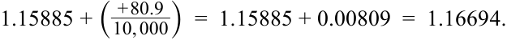
Occasionally, one will see the forward rate or forward points represented as a percentage of the spot rate rather than as an absolute number of points. Continuing the previous example, the three-month forward rate for USD/EUR can be represented as follows:
Thỉnh thoảng, người ta sẽ thấy tỷ giá kỳ hạn hoặc điểm kỳ hạn được biểu diễn dưới dạng tỷ lệ phần trăm của tỷ giá giao ngay thay vì một con số điểm tuyệt đối. Tiếp tục ví dụ trước, tỷ giá kỳ hạn ba tháng của USD/EUR có thể được biểu diễn như sau:
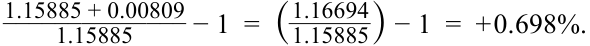
This shows that either the forward rate or the forward points can be used to calculate the percentage discount (or premium) in the forward market—in this case, +0.698 percent rounding to three decimal places. To convert a spot quote into a forward quote when the points are shown as a percentage, one simply multiplies the spot rate by one plus the percentage premium or discount:
Điều này cho thấy rằng có thể sử dụng tỷ giá kỳ hạn hoặc điểm kỳ hạn để tính toán phần trăm chiết khấu (hoặc phần bù) trên thị trường kỳ hạn—trong trường hợp này là +0,698% khi làm tròn đến ba chữ số thập phân. Để chuyển đổi một báo giá giao ngay thành báo giá kỳ hạn khi các điểm kỳ hạn được hiển thị dưới dạng tỷ lệ phần trăm, người ta chỉ cần nhân tỷ giá giao ngay với một cộng với phần trăm phần bù hoặc chiết khấu:
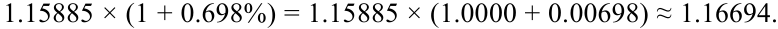
Note that, rounded to the fifth decimal place, this is equal to our previous calculation. However, it is typically the case in professional FX markets that forward rates will be quoted in terms of pips rather than percentages.
Lưu ý rằng, khi làm tròn đến chữ số thập phân thứ năm, kết quả này bằng với phép tính trước đó của chúng ta. Tuy nhiên, trên các thị trường FX chuyên nghiệp, tỷ giá kỳ hạn thường sẽ được yết theo pips thay vì theo tỷ lệ phần trăm.
Arbitrage Relationships
Các mối quan hệ kinh doanh chênh lệch giá (Arbitrage Relationships)
We now turn to the interaction between spot rates, forward rates, and interest rates and how their relationship is derived. Forward exchange rates are based on an arbitrage relationship that equates the investment return on two alternative but equivalent investments. Consider the case of an investor with funds to invest. For simplicity, we will assume that one unit of the investor’s domestic currency will be invested for one period. One alternative is to invest for one period at the domestic risk-free rate (rd); at the end of the period, the amount of funds held is equal to (1 + rd). An alternative investment is to convert this one unit of domestic currency to foreign currency using
Bây giờ chúng ta chuyển sang tìm hiểu sự tương tác giữa tỷ giá giao ngay, tỷ giá kỳ hạn và lãi suất cũng như cách thức suy ra mối quan hệ giữa chúng. Tỷ giá hối đoái kỳ hạn dựa trên một mối quan hệ kinh doanh chênh lệch giá (arbitrage relationship) làm cân bằng tỷ suất sinh lợi đầu tư trên hai khoản đầu tư thay thế nhưng tương đương nhau. Hãy xem xét trường hợp một nhà đầu tư có sẵn nguồn vốn để đầu tư. Để đơn giản hóa, chúng ta sẽ giả định rằng một đơn vị đồng nội tệ của nhà đầu tư sẽ được đem đi đầu tư trong một kỳ. Một phương án là đầu tư trong một kỳ ở mức lãi suất phi rủi ro trong nước ($r_d$); vào cuối kỳ, số tiền thu được bằng $(1 + r_d)$. Một phương án đầu tư thay thế khác là chuyển đổi một đơn vị đồng nội tệ này sang ngoại tệ bằng cách sử dụng
the spot rate of Sf/d (number of units of foreign currency per one unit of domestic currency). This can be invested for one period at the foreign risk-free rate; at the end of the period, the investor would have Sf/d(1 + rf) units of foreign currency. These funds must then be converted back to the investor’s domestic currency. If the exchange rate to be used for this end-of-period conversion was pre-contracted at the start of the period (i.e., a forward rate was used), it would eliminate any FX risk from converting at a future, unknown spot rate. Given the assumed exchange rate convention (foreign/ domestic), the investor would obtain (1/Ff/d) units of the domestic currency for each unit of foreign currency sold forward. Note that this process of converting domestic funds in the spot FX market, investing at the foreign risk-free rate, and then converting back to the domestic currency with a forward rate is termed “swap financing.”
tỷ giá giao ngay $S_{f/d}$ (số đơn vị ngoại tệ trên một đơn vị nội tệ). Số tiền này có thể được đầu tư trong một kỳ ở mức lãi suất phi rủi ro nước ngoài ($r_f$); vào cuối kỳ, nhà đầu tư sẽ có $S_{f/d}(1 + r_f)$ đơn vị ngoại tệ. Số tiền này sau đó phải được chuyển đổi ngược trở lại đồng nội tệ của nhà đầu tư. Nếu tỷ giá hối đoái được sử dụng cho việc chuyển đổi cuối kỳ này đã được ký hợp đồng trước ngay từ đầu kỳ (tức là sử dụng tỷ giá kỳ hạn), nó sẽ loại bỏ mọi rủi ro FX phát sinh từ việc chuyển đổi ở một mức tỷ giá giao ngay chưa biết trước trong tương lai. Theo quy ước tỷ giá hối đoái đã giả định (ngoại tệ/nội tệ – $f/d$), nhà đầu tư sẽ nhận được $(1 / F_{f/d})$ đơn vị đồng nội tệ cho mỗi đơn vị ngoại tệ được bán kỳ hạn. Lưu ý rằng quá trình chuyển đổi nguồn vốn trong nước trên thị trường FX giao ngay, đầu tư ở mức lãi suất phi rủi ro nước ngoài, và sau đó chuyển đổi ngược trở lại đồng nội tệ bằng tỷ giá kỳ hạn được gọi là “tài trợ vốn qua hoán đổi” (swap financing).
Hence, we have two alternative investments—both are risk free because both are invested at risk-free interest rates and because any FX risk was eliminated (hedged) by using a forward rate. Because these two investments are equal in risk characteristics, they must have the same return. Bearing in mind that the currency quoting convention is the number of foreign currency units per single domestic unit ( f/d ), this relationship can be stated as follows:
Do đó, chúng ta có hai phương án đầu tư thay thế—cả hai đều phi rủi ro bởi vì cả hai đều được đầu tư ở mức lãi suất phi rủi ro và bởi vì mọi rủi ro FX đã được loại bỏ (phòng ngừa – hedged) bằng cách sử dụng tỷ giá kỳ hạn. Bởi vì hai khoản đầu tư này có đặc tính rủi ro ngang nhau, chúng phải mang lại cùng một mức tỷ suất sinh lợi (ngang giá lãi suất có phòng ngừa – covered interest rate parity). Lưu ý rằng quy ước yết giá tiền tệ đang dùng là số đơn vị ngoại tệ trên một đơn vị nội tệ duy nhất ($f/d$), mối quan hệ này có thể được phát biểu như sau:
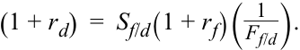
This is an arbitrage relationship because it describes two alternative investments (one on either side of the equal sign) that should have equal returns. If they do not, a riskless arbitrage opportunity exists because an investor can sell short the investment with the lower return and invest the funds in the investment with the higher return; the difference between the two returns is pure profit. It is because of this arbitrage relationship that the all-in financing rate using swap financing is close to the domestic interest rate.
Đây là một mối quan hệ kinh doanh chênh lệch giá bởi vì nó mô tả hai khoản đầu tư thay thế (mỗi khoản nằm ở một vế của dấu bằng) lẽ ra phải có tỷ suất sinh lợi bằng nhau. Nếu chúng không bằng nhau, một cơ hội kinh doanh chênh lệch giá phi rủi ro sẽ tồn tại bởi vì nhà đầu tư có thể bán khống (sell short / đi vay) khoản đầu tư có tỷ suất sinh lợi thấp hơn và đem tiền đầu tư vào khoản đầu tư có tỷ suất sinh lợi cao hơn; phần chênh lệch giữa hai tỷ suất sinh lợi là lợi nhuận thuần túy. Chính nhờ mối quan hệ kinh doanh chênh lệch giá này mà mức lãi suất tài trợ trọn gói (all-in financing rate) khi sử dụng phương thức tài trợ qua hoán đổi xấp xỉ bằng mức lãi suất trong nước.
This formula is perhaps the easiest and most intuitive way to remember the formula for the forward rate because this formula is based directly on the underlying intuition (the arbitrage relationship of two alternative but equivalent investments, one on either side of the equal sign). Also, the right-hand side of the equation, for the hedged foreign investment alternative, is arranged in proper time sequence: (1) convert domestic to foreign currency; then (2) invest the foreign currency at the foreign interest rate; and finally (3) convert the foreign currency back to the domestic currency. Recall that this equation is based on an f / d exchange rate quoting convention. If the exchange rate data were presented in d/f form, one could either invert these quotes back to f/d form and use the previous equation or use the following equivalent equation:
Công thức này có lẽ là cách dễ nhất và trực quan nhất để ghi nhớ công thức tính tỷ giá kỳ hạn bởi vì công thức này dựa trực tiếp vào trực giác cơ sở (mối quan hệ kinh doanh chênh lệch giá của hai khoản đầu tư thay thế nhưng tương đương nhau, mỗi khoản ở một vế của dấu bằng). Ngoài ra, vế phải của phương trình, đại diện cho phương án đầu tư nước ngoài có phòng ngừa rủi ro, được sắp xếp theo đúng trình tự thời gian: (1) chuyển đổi nội tệ sang ngoại tệ; sau đó (2) đầu tư ngoại tệ ở mức lãi suất nước ngoài; và cuối cùng (3) chuyển đổi ngoại tệ ngược trở lại nội tệ. Hãy nhớ lại rằng phương trình này dựa trên quy ước yết giá tỷ giá hối đoái $f/d$. Nếu dữ liệu tỷ giá hối đoái được trình bày dưới dạng $d/f$, người ta có thể nghịch đảo các báo giá này về lại dạng $f/d$ và sử dụng phương trình trên hoặc sử dụng phương trình tương đương sau đây:
(1 + rd) = (1/Sd/f)(1 + rf)Fd/f.
If this latter equation were used, remember that forward and spot exchange rates are now being quoted on a d / f convention.
Nếu sử dụng phương trình thứ hai này, hãy nhớ rằng tỷ giá hối đoái kỳ hạn và giao ngay hiện đang được yết theo quy ước $d/f$.
This arbitrage equation can be rearranged as needs require. For example, to get the formula for the forward rate, the previous equation can be restated as follows:
Phương trình kinh doanh chênh lệch giá này có thể được sắp xếp lại tùy theo nhu cầu. Ví dụ, để có công thức tính tỷ giá kỳ hạn, phương trình trước có thể được viết lại như sau:
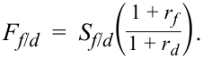
Given the spot exchange rate and the domestic and foreign risk-free interest rates, the forward rate is the value that completes this equation and eliminates any arbitrage opportunity. For example, let’s assume that the spot exchange rate (Sf/d) is 1.6535, the domestic 12-month risk-free rate is 3.50 percent, and the foreign 12-month risk-free rate is 5.00 percent. The 12-month forward rate (Ff/d) must then be equal to:
Khi biết tỷ giá hối đoái giao ngay cùng với lãi suất phi rủi ro trong nước và nước ngoài, tỷ giá kỳ hạn là giá trị giúp hoàn thiện phương trình này và loại bỏ bất kỳ cơ hội kinh doanh chênh lệch giá nào. Ví dụ, hãy giả sử rằng tỷ giá hối đoái giao ngay ($S_{f/d}$) là 1,6535, lãi suất phi rủi ro kỳ hạn 12 tháng trong nước là 3,50%, và lãi suất phi rủi ro kỳ hạn 12 tháng nước ngoài là 5,00%. Khi đó, tỷ giá kỳ hạn 12 tháng ($F_{f/d}$) phải bằng:
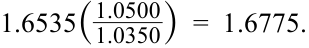
Suppose instead that, with the spot exchange rate and interest rates unchanged, you were given a quote on the 12-month forward rate (Ff/d) of 1.6900. Because this misquoted forward rate does not agree with the arbitrage equation, it would present a riskless arbitrage opportunity. This can be calculated by using the arbitrage equation to compute the return on the two alternative investment strategies. The return on the domestic-only investment approach is the domestic risk-free rate (3.50 percent). In contrast, the return on the hedged foreign investment when this misquoted forward rate is put into the arbitrage equation equals:
Ngược lại, giả sử rằng với tỷ giá hối đoái giao ngay và lãi suất không đổi, bạn nhận được một báo giá tỷ giá kỳ hạn 12 tháng ($F_{f/d}$) ở mức 1,6900. Bởi vì tỷ giá kỳ hạn bị yết sai này không khớp với phương trình kinh doanh chênh lệch giá, nó sẽ mang lại một cơ hội kinh doanh chênh lệch giá phi rủi ro. Điều này có thể được tính toán bằng cách sử dụng phương trình kinh doanh chênh lệch giá để tính tỷ suất sinh lợi trên hai chiến lược đầu tư thay thế. Tỷ suất sinh lợi của phương pháp chỉ đầu tư trong nước là mức lãi suất phi rủi ro trong nước (3,50%). Ngược lại, tỷ suất sinh lợi của khoản đầu tư nước ngoài có phòng ngừa rủi ro khi đưa tỷ giá kỳ hạn bị yết sai này vào phương trình kinh doanh chênh lệch giá sẽ bằng:
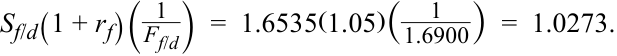
This results in a return of 2.73 percent. Hence, the investor could make riskless arbitrage profits by borrowing at the higher foreign risk-free rate, selling the foreign currency at the spot exchange rate, hedging the currency exposure (buying the foreign currency back) at the misquoted forward rate, investing the funds at the lower domestic risk-free rate, and thereby getting a profit of 77 basis points (3.50% – 2.73%) for each unit of domestic currency involved—all with no upfront commitment of the investor’s own capital. Any such opportunity in real-world financial markets would be quickly “arbed” away. In this example, the investor actually borrows at the higher of the two interest rates but makes a profit because the foreign currency is underpriced in the forward market.
Kết quả này tương ứng với tỷ suất sinh lợi là 2,73%. Do đó, nhà đầu tư có thể kiếm được lợi nhuận kinh doanh chênh lệch giá phi rủi ro bằng cách đi vay ở mức lãi suất phi rủi ro nước ngoài cao hơn, bán ngoại tệ ở tỷ giá hối đoái giao ngay, phòng ngừa rủi ro tiền tệ (mua lại ngoại tệ) ở mức tỷ giá kỳ hạn bị yết sai, đầu tư số tiền thu được ở mức lãi suất phi rủi ro trong nước thấp hơn, và qua đó thu được khoản lợi nhuận 77 điểm cơ bản ($3,50\% - 2,73\%$) trên mỗi đơn vị đồng nội tệ tham gia giao dịch—tất cả mà không cần bất kỳ sự cam kết bỏ vốn tự có ban đầu nào của nhà đầu tư. Bất kỳ cơ hội nào như vậy trên các thị trường tài chính thực tế sẽ nhanh chóng bị triệt tiêu thông qua hoạt động kinh doanh chênh lệch giá (“arbed” away). Trong ví dụ này, nhà đầu tư thực chất đi vay ở mức lãi suất cao hơn trong hai mức lãi suất nhưng vẫn kiếm được lợi nhuận bởi vì đồng ngoại tệ đang bị định giá thấp (underpriced) trên thị trường kỳ hạn.
The underlying arbitrage equation can also be rearranged to show the forward rate as a percentage of the spot rate:
Phương trình kinh doanh chênh lệch giá cơ sở cũng có thể được sắp xếp lại để biểu thị tỷ giá kỳ hạn dưới dạng tỷ lệ phần trăm của tỷ giá giao ngay:
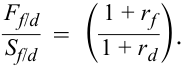
This shows that, given an f/d quoting convention, the forward rate will be higher than (be at a premium to) the spot rate if foreign interest rates are higher than domestic interest rates. More generally, and regardless of the quoting convention, the currency with the higher (lower) interest rate will always trade at a discount (premium) in the forward market .
Phương trình này cho thấy rằng, với quy ước yết giá $f/d$, tỷ giá kỳ hạn sẽ cao hơn (giao dịch ở mức phần bù so với) tỷ giá giao ngay nếu lãi suất nước ngoài cao hơn lãi suất trong nước. Tổng quát hơn, và bất kể quy ước yết giá là gì, đồng tiền có mức lãi suất cao hơn (thấp hơn) sẽ luôn giao dịch ở mức chiết khấu (phần bù) trên thị trường kỳ hạn.
One context in which forward rates are quoted as a percentage of spot rates occurs when forward rates are interpreted as expected future spot rates, as follows:
Một bối cảnh mà trong đó tỷ giá kỳ hạn được yết dưới dạng tỷ lệ phần trăm của tỷ giá giao ngay xảy ra khi tỷ giá kỳ hạn được diễn giải như tỷ giá giao ngay dự kiến trong tương lai (expected future spot rates), như sau:
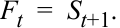
Substituting this expression into the previous equation and doing some rearranging leads to the following:
Thay thế biểu thức này vào phương trình trước và thực hiện một số biến đổi đại số sẽ dẫn đến kết quả sau:
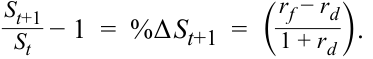
This shows that if forward rates are interpreted as expected future spot rates, the expected percentage change in the spot rate is proportional to the interest rate differential (rf – rd).
Điều này cho thấy rằng nếu tỷ giá kỳ hạn được diễn giải như tỷ giá giao ngay kỳ vọng trong tương lai, thì phần trăm thay đổi kỳ vọng của tỷ giá giao ngay sẽ tỷ lệ thuận với mức chênh lệch lãi suất ($r_f - r_d$).
It is intuitively appealing to see forward rates as expected future spot rates. However, this interpretation of forward rates should be used cautiously. The direction of the expected change in spot rates is somewhat counterintuitive. All else being equal, an increase in domestic interest rates (e.g., the central bank tightens monetary policy) would typically be expected to lead to an increase in the value of the domestic currency. In contrast, the previous equation indicates that, all else equal, a higher domestic interest rate implies slower expected appreciation (or greater expected depreciation) of the domestic currency (recall that this equation is based on an f/d quoting convention).
Việc xem tỷ giá kỳ hạn như tỷ giá giao ngay kỳ vọng trong tương lai có sức hấp dẫn về mặt trực giác. Tuy nhiên, cách diễn giải tỷ giá kỳ hạn này cần được sử dụng một cách thận trọng. Chiều hướng của sự thay đổi kỳ vọng trong tỷ giá giao ngay có phần trái ngược với trực giác thông thường. Với các yếu tố khác không đổi, việc tăng lãi suất trong nước (ví dụ: ngân hàng trung ương thắt chặt chính sách tiền tệ) thông thường sẽ được kỳ vọng dẫn đến sự gia tăng giá trị của đồng nội tệ. Ngược lại, phương trình trên lại chỉ ra rằng, với các yếu tố khác không đổi, mức lãi suất trong nước cao hơn hàm ý tốc độ lên giá kỳ vọng chậm hơn (hoặc mức mất giá kỳ vọng lớn hơn) của đồng nội tệ (hãy nhớ lại rằng phương trình này dựa trên quy ước yết giá $f/d$).
More important, historical data show that forward rates are poor predictors of future spot rates. Although various econometric studies suggest that forward rates may be unbiased predictors of future spot rates (i.e., they do not systematically over- or under-estimate future spot rates), this is not particularly useful information because
Quan trọng hơn, dữ liệu lịch sử cho thấy tỷ giá kỳ hạn là những công cụ dự báo kém chính xác đối với tỷ giá giao ngay trong tương lai. Mặc dù nhiều nghiên cứu kinh tế lượng khác nhau gợi ý rằng tỷ giá kỳ hạn có thể là những công cụ dự báo không chệch (unbiased predictors) của tỷ giá giao ngay tương lai (tức là chúng không ước tính quá cao hay quá thấp một cách có hệ thống đối với tỷ giá giao ngay tương lai), nhưng đây không phải là thông tin đặc biệt hữu ích bởi vì
the margin of error for these forecasts is so large. As mentioned in the Introduction, the FX market is far too complex and dynamic to be captured by a single variable, such as the level of the yield differential between countries. Moreover, according to the formula for the forward rate, forward rates are based on domestic and foreign interest rates. This means that anything that affects the level and shape of the yield curve in either the domestic or foreign market will also affect the relationship between spot and forward exchange rates. In other words, FX markets do not operate in isolation but rather reflect almost all factors affecting other markets globally; anything that affects expectations or risk premia in these other markets will reverberate in forward exchange rates as well. Although the level of the yield differential is one factor that the market may look at in forming spot exchange rate expectations, it is only one of many factors. (Many traders look to the trend in the yield differential rather than the level of the differential.) Moreover, a lot of noise in FX markets makes almost any model—no matter how complex—a relatively poor predictor of spot rates at any given point in the future. In practice, FX traders and market strategists do not base either their currency expectations or trading strategies solely on forward rates.
biên độ sai số (margin of error) của các dự báo này là quá lớn. Như đã đề cập trong phần Giới thiệu, thị trường FX quá phức tạp và năng động để có thể được nắm bắt chỉ bằng một biến số duy nhất, chẳng hạn như mức chênh lệch lợi suất giữa các quốc gia. Hơn nữa, theo công thức tính tỷ giá kỳ hạn, tỷ giá kỳ hạn được dựa trên lãi suất trong nước và nước ngoài. Điều này có nghĩa là bất kỳ yếu tố nào ảnh hưởng đến mức độ và hình dạng của đường cong lợi suất (yield curve) ở thị trường trong nước hoặc nước ngoài cũng sẽ ảnh hưởng đến mối quan hệ giữa tỷ giá hối đoái giao ngay và kỳ hạn. Nói cách khác, thị trường FX không vận hành một cách cô lập mà thay vào đó phản ánh hầu hết mọi yếu tố ảnh hưởng đến các thị trường khác trên toàn cầu; bất kỳ điều gì ảnh hưởng đến kỳ vọng hoặc phần bù rủi ro (risk premia) trên các thị trường khác này cũng sẽ vang dội vào tỷ giá hối đoái kỳ hạn. Mặc dù mức chênh lệch lợi suất là một yếu tố mà thị trường có thể xem xét khi hình thành kỳ vọng về tỷ giá hối đoái giao ngay, nhưng nó chỉ là một trong rất nhiều yếu tố. (Nhiều nhà giao dịch nhìn vào xu hướng của chênh lệch lợi suất hơn là mức độ tuyệt đối của chênh lệch đó.) Hơn nữa, rất nhiều nhiễu loạn (noise) trên thị trường FX khiến cho hầu như mọi mô hình—dù phức tạp đến đâu—đều trở thành một công cụ dự báo tương đối kém cỏi đối với tỷ giá giao ngay tại bất kỳ thời điểm cụ thể nào trong tương lai. Trên thực tế, các nhà giao dịch FX và các nhà chiến lược thị trường không đặt kỳ vọng tiền tệ hay chiến lược giao dịch của họ chỉ thuần túy dựa vào tỷ giá kỳ hạn.
For the purposes of this lesson, it is best to understand forward exchange rates simply as a product of the arbitrage equation outlined earlier and forward points as being related to the (time-scaled) interest rate differential between the two countries . Reading any more than that into forward rates or interpreting them as the “market forecast” can be potentially misleading.
Phục vụ cho mục đích của bài học này, tốt nhất là nên hiểu tỷ giá hối đoái kỳ hạn đơn giản như một sản phẩm của phương trình kinh doanh chênh lệch giá đã nêu ở trên và điểm kỳ hạn là có liên hệ với mức chênh lệch lãi suất (đã được quy đổi theo thời gian) giữa hai quốc gia. Việc suy diễn quá mức vào tỷ giá kỳ hạn hoặc diễn giải chúng như là “dự báo của thị trường” có thể dẫn đến những hiểu lầm tai hại.
Forward Discounts and Premiums
Chiết khấu kỳ hạn và Phần bù kỳ hạn (Forward Discounts and Premiums)
We now continue our discussion of forward discounts and premiums based on spot and interest rates and add the impact of maturity. To understand the relationship between maturity and forward points, we need to generalize our arbitrage formula slightly. Suppose the investment horizon is a fraction, τ, of the period for which the interest rates are quoted. Then the interest earned in the domestic and foreign markets would be (rd τ) and (rf τ), respectively. Substituting this into our arbitrage relationship and solving for the difference between the forward and spot exchange rates gives the following:
Bây giờ chúng ta tiếp tục cuộc thảo luận về chiết khấu kỳ hạn và phần bù kỳ hạn dựa trên tỷ giá giao ngay và lãi suất, đồng thời bổ sung thêm tác động của kỳ hạn (maturity). Để hiểu mối quan hệ giữa kỳ hạn và điểm kỳ hạn, chúng ta cần tổng quát hóa công thức kinh doanh chênh lệch giá của mình một chút. Giả sử thời hạn đầu tư là một phân số, $\tau$, của kỳ mà lãi suất được yết giá (thường là năm). Khi đó, tiền lãi kiếm được trên thị trường trong nước và nước ngoài sẽ lần lượt là $(r_d \tau)$ và $(r_f \tau)$. Thay thế điều này vào mối quan hệ kinh doanh chênh lệch giá của chúng ta và giải phương trình tìm phần chênh lệch giữa tỷ giá hối đoái kỳ hạn và giao ngay sẽ cho ra kết quả sau:
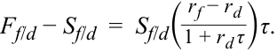
This equation shows that forward points (appropriately scaled) are proportional to the spot exchange rate and to the interest rate differential and approximately (but not exactly) proportional to the horizon of the forward contract.
Phương trình này cho thấy điểm kỳ hạn (đã được quy đổi tỷ lệ thích hợp) tỷ lệ thuận với tỷ giá hối đoái giao ngay và mức chênh lệch lãi suất, đồng thời xấp xỉ (nhưng không hoàn toàn chính xác tuyệt đối) tỷ lệ thuận với kỳ hạn của hợp đồng kỳ hạn.
For example, suppose that we wanted to determine the 30-day forward exchange rate given a 30-day domestic risk-free interest rate of 2.00 percent per year, a 30-day foreign risk-free interest rate of 3.00 percent per year, and a spot exchange rate (Sf/d) of 1.6555. The risk-free assets used in this arbitrage relationship are typically bank deposits quoted using the London Interbank Offered Rate (Libor) for the currencies involved. The day count convention for Libor deposits is actual/360. Incorporating the fractional period (τ) and inserting the data into the forward rate equation leads to the following 30-day forward rate:
Ví dụ, giả sử rằng chúng ta muốn xác định tỷ giá hối đoái kỳ hạn 30 ngày khi biết lãi suất phi rủi ro 30 ngày trong nước là 2,00%/năm, lãi suất phi rủi ro 30 ngày nước ngoài là 3,00%/năm, và tỷ giá hối đoái giao ngay ($S_{f/d}$) là 1,6555. Các tài sản phi rủi ro được sử dụng trong mối quan hệ kinh doanh chênh lệch giá này thường là các khoản tiền gửi ngân hàng được yết giá bằng Lãi suất Chào bán Liên ngân hàng Luân Đôn (London Interbank Offered Rate – Libor) cho các đồng tiền có liên quan. Quy ước đếm ngày (day count convention) cho các khoản tiền gửi Libor là số ngày thực tế/360 (actual/360). Đưa phân số kỳ hạn ($\tau$) và thay dữ liệu vào phương trình tỷ giá kỳ hạn sẽ dẫn đến tỷ giá kỳ hạn 30 ngày như sau:
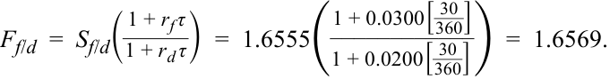
This means that, for a 30-day term, forward rates are trading at a premium of 14 pips (1.6569 – 1.6555). This can also be calculated using the previous formula for swap points:
Điều này có nghĩa là, đối với kỳ hạn 30 ngày, tỷ giá kỳ hạn đang giao dịch ở mức phần bù 14 pips ($1,6569 - 1,6555$). Con số này cũng có thể được tính bằng cách sử dụng công thức điểm hoán đổi đã nêu trước đó:
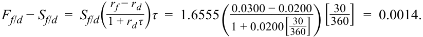
As should be clear from this expression, the absolute number of swap points will be closely related to the term of the forward contract (i.e., approximately proportional to τ = actual/360). For example, leaving the spot exchange rate and interest rates unchanged, and setting the term of the forward contract to 180 days, we obtain the following:
Như có thể thấy rõ từ biểu thức này, giá trị tuyệt đối của số điểm hoán đổi sẽ có liên hệ chặt chẽ với kỳ hạn của hợp đồng kỳ hạn (tức là xấp xỉ tỷ lệ thuận với $\tau = \text{Actual}/360$). Ví dụ, giữ nguyên tỷ giá hối đoái giao ngay và lãi suất, và đặt kỳ hạn của hợp đồng kỳ hạn thành 180 ngày, chúng ta thu được kết quả sau:
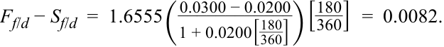
This leads to the forward rate trading at a premium of 82 pips. The increase in the number of forward points is approximately proportional to the increase in the term of the contract (from 30 days to 180 days). Note that although the term of the 180-day forward contract is six times longer than that of a 30-day contract, the number of forward points is not exactly six times larger: 6 × 14 = 84.
Kết quả này dẫn đến việc tỷ giá kỳ hạn giao dịch ở mức phần bù 82 pips. Sự gia tăng số điểm kỳ hạn xấp xỉ tỷ lệ thuận với sự gia tăng kỳ hạn của hợp đồng (từ 30 ngày lên 180 ngày). Lưu ý rằng mặc dù kỳ hạn của hợp đồng kỳ hạn 180 ngày dài gấp sáu lần so với hợp đồng 30 ngày, nhưng số điểm kỳ hạn không lớn gấp chính xác sáu lần: $6 \times 14 = 84$.
Similarly, the number of forward points is proportional to the spread between foreign and domestic interest rates (rf – rd). For example, with reference to the original 30-day forward contract, let’s set the foreign interest rate to 4.00 percent leaving the domestic interest rate and spot exchange rate unchanged. This doubles the interest rate differential (rf – rd) from 1.00 percent to 2.00 percent; it also doubles the forward points (rounding to four decimal places), as follows:
Tương tự, số điểm kỳ hạn tỷ lệ thuận với mức chênh lệch giữa lãi suất nước ngoài và trong nước ($r_f - r_d$). Ví dụ, tham chiếu theo hợp đồng kỳ hạn 30 ngày ban đầu, hãy đặt lãi suất nước ngoài thành 4,00% trong khi giữ nguyên lãi suất trong nước và tỷ giá hối đoái giao ngay. Điều này làm tăng gấp đôi mức chênh lệch lãi suất ($r_f - r_d$) từ 1,00% lên 2,00%; nó cũng làm tăng gấp đôi điểm kỳ hạn (khi làm tròn đến bốn chữ số thập phân), như sau:
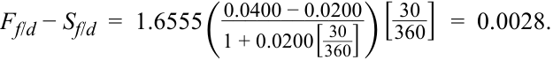
EXAMPLE 2
VÍ DỤ 2 (EXAMPLE 2)
Forward Rate Calculations
Tính toán Tỷ giá kỳ hạn (Forward Rate Calculations)
Một công ty Pháp gần đây đã hoàn tất một thương vụ bán hàng hóa cho một khách hàng tại Vương quốc Anh và dự kiến sẽ nhận được khoản thanh toán trị giá 50 triệu GBP sau 32 ngày. Giám đốc nguồn vốn (corporate treasurer) tại công ty Pháp muốn phòng ngừa rủi ro FX của giao dịch này và nhận được thông tin tỷ giá hối đoái sau đây từ một nhà giao dịch (dealer):
A French company recently finalized a sale of goods to a UK-based client and expects to receive a payment of GBP50 million in 32 days. The corporate treasurer at the French company wants to hedge the FX risk of this transaction and receives the following exchange rate information from a dealer:
| Thông tin tỷ giá | Giá trị |
|---|---|
| Tỷ giá giao ngay GBP/EUR (GBP/EUR spot rate) | 0,8752 |
| Điểm kỳ hạn một tháng (One-month forward points) | –1,4 |
| GBP/EUR spot rate | 0.8752 |
|---|---|
| One-month forward points | –1.4 |
1. Theo thông tin tỷ giá hối đoái trên, giám đốc nguồn vốn có thể phòng ngừa rủi ro FX bằng cách:
-
A. mua euro (bán bảng Anh) ở mức tỷ giá kỳ hạn là 0,87380.
-
B. mua euro (bán bảng Anh) ở mức tỷ giá kỳ hạn là 0,87506.
-
C. bán euro (mua bảng Anh) ở mức tỷ giá kỳ hạn là 0,87506.
- According to the exchange rate information, the treasurer could hedge the FX risk by:
-
A. buying euro (selling British pounds) at a forward rate of 0.87380.
-
B. buying euro (selling British pounds) at a forward rate of 0.87506.
-
C. selling euro (buying British pounds) at a forward rate of 0.87506.
-
Solution :
Lời giải (Solution):
B is correct. The French company would want to convert the British pound to its domestic currency, the euro (it wants to sell British pounds and buy euros). The forward rate would be equal to: 0.8752 + (–1.4/10,000) = 0.87506.
B là đáp án đúng. Công ty Pháp sẽ muốn chuyển đổi đồng bảng Anh sang đồng nội tệ của mình là đồng euro (công ty muốn bán bảng Anh và mua euro). Tỷ giá kỳ hạn sẽ bằng: $0,8752 + (-1,4 / 10.000) = 0,87506$.
2. Theo thông tin tỷ giá hối đoái trên, cách diễn giải đúng nhất về mức chiết khấu kỳ hạn được hiển thị là:
- According to the exchange rate information, the best interpretation of the forward discount shown is that:
-
A. the euro is expected to depreciate over the next 30 days.
-
B. one-month UK interest rates are higher than those in the Eurozone.
-
A. đồng euro được kỳ vọng sẽ mất giá trong 30 ngày tới.
-
B. lãi suất kỳ hạn một tháng của Vương quốc Anh cao hơn lãi suất tại Khu vực đồng Euro.
- C. one-month Eurozone interest rates are higher than those in the United Kingdom.
- C. lãi suất kỳ hạn một tháng của Khu vực đồng Euro cao hơn lãi suất tại Vương quốc Anh.
Solution :
Lời giải (Solution):
C is correct. A forward discount indicates that interest rates in the base currency country (France, in this case, which uses the euro) are higher than those in the price currency country (the United Kingdom).
C là đáp án đúng. Mức chiết khấu kỳ hạn (forward discount) cho biết lãi suất tại quốc gia của đồng tiền cơ sở (Pháp, trong trường hợp này, quốc gia sử dụng đồng euro) cao hơn lãi suất tại quốc gia của đồng tiền định giá (Vương quốc Anh).
- According to the exchange rate information, if the 12-month forward rate is 0.87295 GBP/EUR, then the 12-month forward points are closest to:
-
A. –22.5.
-
B. –2.25.
3. Theo thông tin tỷ giá hối đoái trên, nếu tỷ giá kỳ hạn 12 tháng là 0,87295 GBP/EUR, thì điểm kỳ hạn 12 tháng gần nhất với mức:
C. –0.00225.
-
A. –22,5.
-
B. –2,25.
-
C. –0,00225.
Solution :
Lời giải (Solution):
A is correct. The number of forward points is equal to the scaled difference between the forward rate and the spot rate. In this case: 0.87295 – 0.87520 = –0.00225. This is then multiplied by 10,000 to convert to the number of forward points.
A là đáp án đúng. Số điểm kỳ hạn bằng phần chênh lệch đã được quy đổi tỷ lệ giữa tỷ giá kỳ hạn và tỷ giá giao ngay. Trong trường hợp này: $0,87295 - 0,87520 = -0,00225$. Sau đó nhân số này với 10.000 để chuyển đổi thành số điểm kỳ hạn ($-22,5$).
4. Nếu một nhà giao dịch thứ hai yết tỷ giá GBP/EUR ở mức chiết khấu kỳ hạn 12 tháng là 0,30% trên cùng một mức tỷ giá giao ngay, thì công ty Pháp có thể:
- If a second dealer quotes GBP/EUR at a 12-month forward discount of 0.30 percent on the same spot rate, the French company could:
-
A. trade with either dealer because the 12-month forward quotes are equivalent.
-
B. lock in a profit in 12 months by buying euros from the second dealer and selling it to the original dealer.
-
C. lock in a profit in 12 months by buying euros from the original dealer and selling it to the second dealer.
-
A. giao dịch với bất kỳ nhà giao dịch nào vì hai báo giá kỳ hạn 12 tháng là tương đương nhau.
-
B. khóa chặt một khoản lợi nhuận sau 12 tháng bằng cách mua euro từ nhà giao dịch thứ hai và bán euro cho nhà giao dịch ban đầu.
-
C. khóa chặt một khoản lợi nhuận sau 12 tháng bằng cách mua euro từ nhà giao dịch ban đầu và bán euro cho nhà giao dịch thứ hai.
Solution :
Lời giải (Solution):
B is correct. A 0.30 percent discount means that the second dealer will sell euros 12 months forward at 0.8752 × (1 – 0.0030) = 0.87257, a lower price per euro than the original dealer’s quote of 0.87295. Buying euros at the cheaper 12-month forward rate (0.87257) and selling the same amount of euros 12 months forward at the higher 12-month forward rate (0.87295) means a profit of (0.87295 – 0.87257 = GBP0.00038) per euro transacted, receivable when both forward contracts settle in 12 months.
B là đáp án đúng. Mức chiết khấu 0,30% có nghĩa là nhà giao dịch thứ hai sẽ bán euro kỳ hạn 12 tháng ở mức tỷ giá $0,8752 \times (1 - 0,0030) = 0,87257$, một mức giá tính trên mỗi euro thấp hơn so với báo giá 0,87295 của nhà giao dịch ban đầu. Việc mua euro ở mức tỷ giá kỳ hạn 12 tháng rẻ hơn (0,87257) và bán cùng một lượng euro đó kỳ hạn 12 tháng ở mức tỷ giá kỳ hạn 12 tháng cao hơn (0,87295) mang lại khoản lợi nhuận là ($0,87295 - 0,87257 = 0,00038\text{ GBP}$) trên mỗi euro giao dịch, sẽ nhận được khi cả hai hợp đồng kỳ hạn đáo hạn và thanh toán sau 12 tháng.
- If the 270-day Libor rates (annualized) for the euro and British pound are 1.370 percent and 1.325 percent, respectively, and the spot GBP/EUR exchange rate is 0.8489, then the number of forward points for a 270-day forward rate (FGBP/EUR) is closest to:
5. Nếu lãi suất Libor 270 ngày (đã chuẩn hóa theo năm) đối với đồng euro và đồng bảng Anh lần lượt là 1,370% và 1,325%, và tỷ giá hối đoái giao ngay GBP/EUR là 0,8489, thì số điểm kỳ hạn cho tỷ giá kỳ hạn 270 ngày ($F_{\text{GBP/EUR}}$) gần nhất với mức:
A. –22.8.
-
A. –22,8.
-
B. –3,8.
-
C. –2,8.
B. –3.8. C. –2.8. Solution :
Lời giải (Solution):
C is correct, because the forward rate is calculated as:
C là đáp án đúng, bởi vì tỷ giá kỳ hạn được tính như sau:
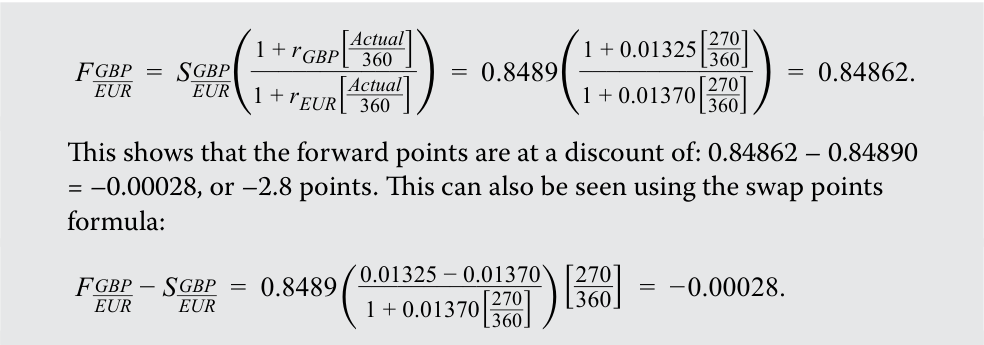
The calculation of –3.8 points omits the day count (270/360), and –22.8 points gets the scaling wrong.
Kết quả này cho thấy điểm kỳ hạn đang ở mức chiết khấu là:
Điều này cũng có thể thấy bằng cách sử dụng công thức điểm hoán đổi (swap points):
Phép tính ra –3,8 điểm đã bỏ sót quy ước đếm ngày (270/360), và kết quả –22,8 điểm đã quy đổi sai tỷ lệ thập phân.
~~PRACTICE PROBLEMS~~
CÁC BÀI TẬP THỰC HÀNH (PRACTICE PROBLEMS)
The following information relates to questions 1-2
Thông tin sau đây liên quan đến câu hỏi 1–2
A dealer provides spot rate quotes for the following currencies:
Một nhà giao dịch (dealer) cung cấp báo giá tỷ giá giao ngay cho các cặp tiền tệ sau:
| Currency | Spot rate |
|---|---|
| CNY/HKD | 0.8422 |
| CNY/ZAR | 0.9149 |
| CNY/SEK | 1.0218 |
| Cặp tiền tệ (Currency) | Tỷ giá giao ngay (Spot rate) |
|---|---|
| CNY/HKD | 0,8422 |
| CNY/ZAR | 0,9149 |
| CNY/SEK | 1,0218 |
1. The spot ZAR/HKD cross-rate is closest to:
1. Tỷ giá chéo giao ngay ZAR/HKD gần nhất với mức:
-
A. 0.9205.
-
B. 1.0864.
-
A. 0,9205.
-
B. 1,0864.
-
C. 1,2978.
C. 1.2978.
2. Another dealer is quoting the ZAR/SEK cross-rate at 1.1210. The arbitrage profit that can be earned is closest to:
2. Một nhà giao dịch khác đang yết tỷ giá chéo ZAR/SEK ở mức 1,1210. Khoản lợi nhuận kinh doanh chênh lệch giá (arbitrage profit) có thể kiếm được gần nhất với mức:
-
A. ZAR3671 per million Swedish krona traded.
-
B. SEK4200 per million South African rand traded.
-
C. ZAR4200 per million Swedish krona traded.
-
A. 3.671 ZAR trên mỗi triệu krona Thụy Điển giao dịch.
-
B. 4.200 SEK trên mỗi triệu rand Nam Phi giao dịch.
-
C. 4.200 ZAR trên mỗi triệu krona Thụy Điển giao dịch.
3. A BRL/MXN spot rate is listed by a dealer at 0.1378. The six-month forward rate is 0.14193. The six-month forward points are closest to:
3. Tỷ giá giao ngay BRL/MXN được một nhà giao dịch niêm yết ở mức 0,1378. Tỷ giá kỳ hạn sáu tháng là 0,14193. Điểm kỳ hạn sáu tháng gần nhất với mức:
-
A. –41.3.
-
B. +41.3.
-
C. +299.7.
-
A. –41,3.
-
B. +41,3.
-
C. +299,7.
4. A three-month forward exchange rate in CAD/USD is listed by a dealer at 1.0123. The dealer also quotes three-month forward points as a percentage at 6.8 percent. The CAD/USD spot rate is closest to:
4. Tỷ giá hối đoái kỳ hạn ba tháng của cặp CAD/USD được một nhà giao dịch niêm yết ở mức 1,0123. Nhà giao dịch này cũng yết điểm kỳ hạn ba tháng dưới dạng tỷ lệ phần trăm ở mức 6,8%. Tỷ giá giao ngay CAD/USD gần nhất với mức:
-
A. 0.9478.
-
B. 1.0550.
C. 1.0862.
-
A. 0,9478.
-
B. 1,0550.
-
C. 1,0862.
5. If the base currency in a forward exchange rate quote is trading at a forward discount, which of the following statements is most accurate?
5. Nếu đồng tiền cơ sở trong một báo giá tỷ giá hối đoái kỳ hạn đang giao dịch ở mức chiết khấu kỳ hạn (forward discount), phát biểu nào sau đây là chính xác nhất?
- A. The forward points will be positive.
- A. Điểm kỳ hạn sẽ mang giá trị dương.
-
B. The forward percentage will be negative.
-
C. The base currency is expected to appreciate versus the price currency.
-
B. Tỷ lệ phần trăm kỳ hạn (forward percentage) sẽ mang giá trị âm.
-
C. Đồng tiền cơ sở được kỳ vọng sẽ lên giá so với đồng tiền định giá.
6. A forward premium indicates:
6. Một phần bù kỳ hạn (forward premium) cho biết:
-
A. an expected increase in demand for the base currency.
-
B. the interest rate is higher in the base currency than in the price currency.
-
C. the interest rate is higher in the price currency than in the base currency.
-
A. sự gia tăng kỳ vọng trong nhu cầu đối với đồng tiền cơ sở.
-
B. lãi suất của đồng tiền cơ sở cao hơn lãi suất của đồng tiền định giá.
-
C. lãi suất của đồng tiền định giá cao hơn lãi suất của đồng tiền cơ sở.
7. The JPY/AUD spot exchange rate is 82.42, the Japanese yen interest rate is 0.15 percent, and the Australian dollar interest rate is 4.95 percent. If the interest rates are quoted on the basis of a 360-day year, the 90-day forward points in JPY/AUD would be closest to:
7. Tỷ giá hối đoái giao ngay JPY/AUD là 82,42, lãi suất đồng yên Nhật là 0,15%, và lãi suất đồng đô la Úc là 4,95%. Nếu lãi suất được yết trên cơ sở một năm có 360 ngày, thì điểm kỳ hạn 90 ngày của cặp JPY/AUD sẽ gần nhất với mức:
-
A. –377.0.
-
B. –97.7.
-
C. 98.9.
-
A. –377,0.
-
B. –97,7.
-
C. 98,9.
~~SOLUTIONS~~
LỜI GIẢI (SOLUTIONS)
- A is correct. To get to the ZAR/HKD cross-rate, it is necessary to take the inverse of the CNY/ZAR spot rate and then multiply by the CNY/HKD exchange rate:
-
ZAR/HKD = (CNY/ZAR)−1 × (CNY/HKD)
-
=( 1 / 0.9149) × 0.8422 = 0.9205
- C is correct. The ZAR/SEK cross-rate from the original dealer is (1.0218/0.9149) = 1.1168, which is lower than the quote from the second dealer. To earn an arbitrage profit, a currency trader would buy Swedish krona (sell South African rand) from the original dealer and sell Swedish krona (buy South African rand) to the second dealer. On SEK1 million, the profit would be:
- A là đáp án đúng. Để tính được tỷ giá chéo ZAR/HKD, cần phải lấy nghịch đảo của tỷ giá giao ngay CNY/ZAR và sau đó nhân với tỷ giá hối đoái CNY/HKD:
SEK1,000,000 × (1.1210 – 1.1168) = ZAR4,200
-
B is correct. The number of forward points equals the forward rate minus the spot rate, or 0.14193 – 0.1378 = 0.00413, multiplied by 10,000: 10,000 × 0.00413= 41.3 points. By convention, forward points are scaled so that ±1 forward point corresponds to a change of ±1 in the last decimal place of the spot exchange rate.
-
A is correct. Given the forward rate and forward points as a percentage, the unknown in the calculation is the spot rate. The calculation is as follows:
- C là đáp án đúng. Tỷ giá chéo ZAR/SEK từ nhà giao dịch ban đầu là $(1,0218 / 0,9149) = 1,1168$, thấp hơn so với báo giá từ nhà giao dịch thứ hai (1,1210). Để kiếm lợi nhuận kinh doanh chênh lệch giá, một nhà giao dịch tiền tệ sẽ mua đồng krona Thụy Điển (bán đồng rand Nam Phi) từ nhà giao dịch ban đầu và bán đồng krona Thụy Điển (mua đồng rand Nam Phi) cho nhà giao dịch thứ hai. Trên quy mô giao dịch 1 triệu SEK, khoản lợi nhuận sẽ là:
Spot rate × (1 + Forward points as a percentage) = Forward rate
Spot rate × (1 + 0.068) = 1.0123
-
B là đáp án đúng. Số điểm kỳ hạn bằng tỷ giá kỳ hạn trừ đi tỷ giá giao ngay, tức là $0,14193 - 0,1378 = 0,00413$, nhân với 10.000: $10.000 \times 0,00413 = +41,3$ điểm (points). Theo quy ước, điểm kỳ hạn được quy đổi tỷ lệ sao cho $\pm 1$ điểm kỳ hạn tương ứng với mức thay đổi $\pm 1$ ở chữ số thập phân cuối cùng của tỷ giá hối đoái giao ngay.
-
A là đáp án đúng. Khi biết tỷ giá kỳ hạn và điểm kỳ hạn dưới dạng tỷ lệ phần trăm, ẩn số trong phép tính là tỷ giá giao ngay. Phép tính cụ thể như sau:
Spot = 1.0123/1.068 = 0.9478
-
B is correct. The base currency trading at a forward discount means that 1 unit of the base currency costs less for forward delivery than for spot delivery (i.e., the forward exchange rate is less than the spot exchange rate). The forward points, expressed either as an absolute number of points or as a percentage, are negative.
-
C is correct. To eliminate arbitrage opportunities, the spot exchange rate ( S ), the forward exchange rate ( F ), the interest rate in the base currency (rd, and the interest rate in the price currency (rf) must satisfy:
-
B là đáp án đúng. Đồng tiền cơ sở giao dịch ở mức chiết khấu kỳ hạn có nghĩa là 1 đơn vị đồng tiền cơ sở có chi phí giao nhận kỳ hạn thấp hơn so với giao nhận giao ngay (tức là tỷ giá hối đoái kỳ hạn nhỏ hơn tỷ giá hối đoái giao ngay). Điểm kỳ hạn, dù được biểu thị dưới dạng số điểm tuyệt đối hay dưới dạng tỷ lệ phần trăm, đều mang giá trị âm.
-
C là đáp án đúng. Để loại bỏ các cơ hội kinh doanh chênh lệch giá, tỷ giá hối đoái giao ngay ($S$), tỷ giá hối đoái kỳ hạn ($F$), lãi suất của đồng tiền cơ sở ($r_d$), và lãi suất của đồng tiền định giá ($r_f$) phải thỏa mãn phương trình:
Ff/d/ Sf/d = (1+rfτ / 1+rdτ).
According to this formula, the base currency will trade at forward premium ( F > S ) if, and only if, the interest rate in the price currency is higher than the interest rate in the base currency (rf > rd).
Theo công thức này, đồng tiền cơ sở sẽ giao dịch ở mức phần bù kỳ hạn ($F > S$) khi và chỉ khi lãi suất của đồng tiền định giá cao hơn lãi suất của đồng tiền cơ sở ($r_f > r_d$).
- B is correct. The forward exchange rate is given by:
- B là đáp án đúng. Tỷ giá hối đoái kỳ hạn được cho bởi công thức:
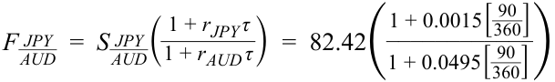
= 82.42 × 0.98815 = 81.443.
Điểm kỳ hạn được tính như sau:
The forward points are as follows:
100 × ( F × S ) = 100 × (81.443 – 82.42) = 100 × (–0.977) = –97.7.
Because the spot exchange rate is quoted with two decimal places, the forward points are scaled by 100.
Bởi vì tỷ giá hối đoái giao ngay của đồng yên được yết với hai chữ số thập phân, nên điểm kỳ hạn được quy đổi tỷ lệ bằng cách nhân với 100.